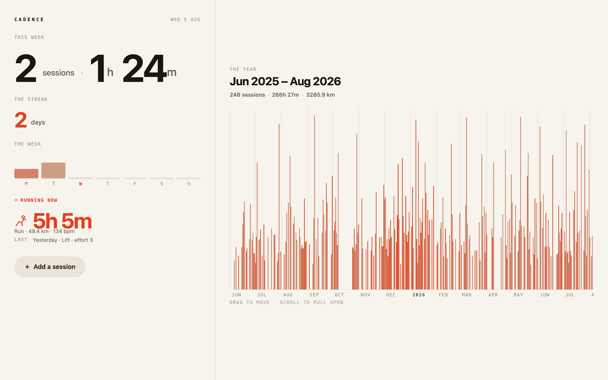
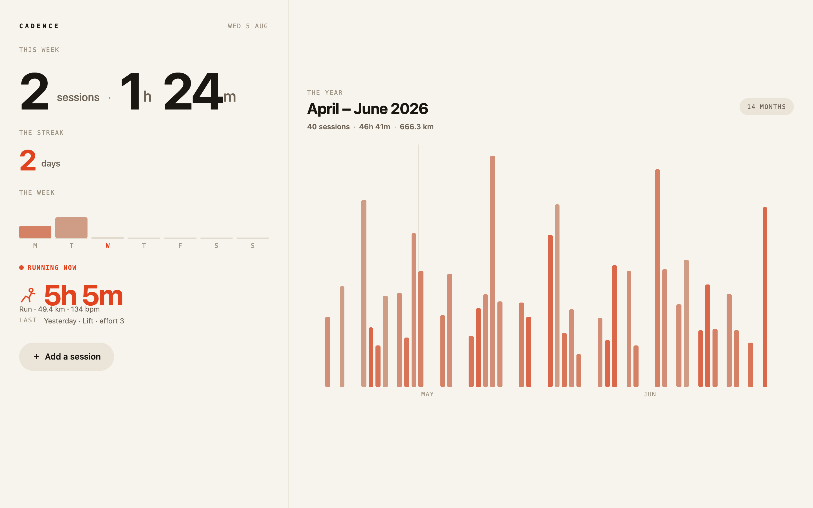
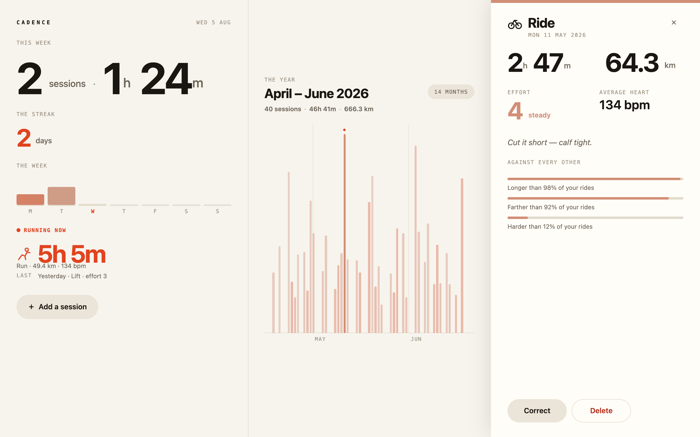
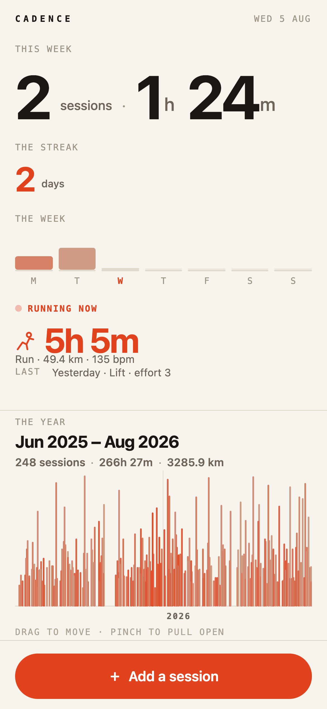
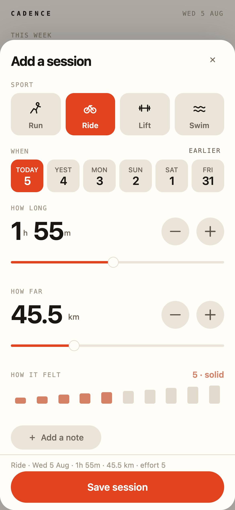

A training log, briefed for bold, differentiated typography and interaction and for working properly on a phone as well as a desk. The first eval to push on how a program looks rather than only on what it does.
The run stalled once and was resumed. It hung for ten minutes driving the app through a
hand-rolled browser harness and the watchdog interrupted it. Nothing was lost — the program was already on
disk and compiling. It was resumed from its own transcript, told to drive through verify --assert
instead, and finished. It re-expressed the whole check as a 98-line assert script that does the same work
in under a minute. Its own verdict: “that's on me: the supported path was documented and I went around it.”
| Tree | Fresh git clone at 11fddc1, built, nothing else staged |
|---|---|
| Given | evals/apps/cadence/brief.md and api/ only; no acceptance existed at the time of the run |
| Service | Deterministic fixture on :8320 — 248 sessions over fourteen months, a frozen clock, and a session that is genuinely running |
| Mobile | No device or simulator. Headless Chrome emulation only, and the brief said so — layout, reach and touch routing are testable; real gesture arbitration is not |
One local Dataset seeded from the service; every figure — this week, the streak, the week's
shape, the strip, the visible-period summary — is a constraint over it. Add, correct and delete write the
service and the dataset, so nothing waits for a refetch. The service's frozen clock is the app's clock.
The year is 431 days as one strip: height is duration, colour is effort. It is handled rather than looked at — drag, one-finger drag, pinch, trackpad pinch, wheel and keys all move it, every frame. Panning moves a single constraint and 248 bars follow, which is the language's whole argument in one interaction.



Not a shrunken desktop. The same app rearranged: the columns stack, the hero resizes against both the measured
line width and the remaining vertical budget, and the primary action becomes a full-width accent pill at the
bottom of the screen where a thumb is. The strip's own hint changes with the input available —
SCROLL TO PULL OPEN on a desk, PINCH TO PULL OPEN on a phone.


The brief made one design demand mechanically checkable: the largest number on a screen is at least six
times the size of the smallest text on that same screen. The agent's own assert script walks every visible
Text and fails below that ratio.
measured: 7.3× on a phone · 8.7× on a desk — at every state (today, detail, sheet, no-streak)
Self-measured by the program's own assert. Not independently re-measured here.
It also read the counterweight in the brief — restraint; something that moves for no reason is worse than something that doesn't move — and answered it explicitly: every figure that can change is sprung, and nothing else moves. It declined dark mode on the grounds that the brief did not ask and the docs say following the system is an opt-in you should not ship unseen. That is the over-steer guard working.
Re-tested here against 11fddc1 with minimal reproductions.
| # | Finding | Validation | Recommendation |
|---|---|---|---|
| C1 | Set-then-fetch on a DataSource in one handler requests the old address.
The same defect the Venue run hit, found independently. This agent stopped and wrote a twelve-line probe app
plus an assert script purely to answer it. |
Confirmed Reproduced here: settled url …/performances, actual request …/halls. |
Fix bug Two independent sightings, one round. The highest-priority item from this round. |
| C2 | A :path inside a Spring's to gives advice that is nonsense if followed.
'$data' is not a member of Spring — declare it ($data: <type> = …) or fix the name [DECLARE6001]The real rule is that a datapath needs a view cursor and a Spring is not a view. |
Confirmed Reproduced verbatim. |
Fix bug A dedicated diagnostic: “a :path resolves against a view's datapath; Spring has none — read it into an attribute on the enclosing view.” Animator and State likely share the edge. |
| C3 | draw() is sold as first-class and has no reference entry at all.
The agent authored four sport marks and found d.scale() by grepping
runtime/dist/draw.d.ts. Nothing says the display list is in unscaled local coordinates. |
ConfirmedDraw and Draw.scale both absent from declare-model.json. |
Docs update Charts are the obvious reach for a dashboard, and this is the surface they need. |
| C4 | Theme tokens are not in the machine model. The library's looks are determined entirely by
names — control, controlHover, controlPressed, controlSelected,
sliderHandle — that appear only in source. On warm paper the defaults are wrong, and the fix
became findable only after reading library/themes/sanfrancisco.declare. |
ConfirmedTheme, Theme.control, Theme.controlHover all absent from the reference. |
Docs update A Theme reference entry listing every token and which components consult it turns “restyle the library to my palette” from a read into a lookup. |
| C5 | “Type annotations do not live in bodies” is read too narrowly. The rule bans local
const/let annotations and lambda parameter annotations in every method and value body —
while script { } accepts full TypeScript. The identical syntax is legal three lines up and illegal
three lines down. |
Confirmedscript { function f(n: number): number[] } compiles; const xs: number[] in a method body is DECLARE2000. |
Docs update One clause: “including local bindings and lambda parameters; narrow with x as T instead.” |
| C6 | explain() is silent on layout-owned geometry. For a slot written by a layout it
returns deps: null, source: null, pos: null — so the one tool that answers “why is this value what it
is” says nothing precisely where the agent needed it. |
Confirmed Reproduced: explain(view,"x") → {"static":false,"live":false,"deps":null,"source":null,"pos":null}. |
Fix bug Saying “written by SimpleLayout on <parent>” would have pointed at the cause in one query. Cheap, and explain() is the project's best-praised affordance. |
| C7 | An auto-sizing view nested in a SimpleLayout produced overlapping glyphs, then
x: NaN. The agent's single most expensive bug — about 40% of its time. |
Not reproduced A minimal nested auto-size case lays out correctly, with and without width = { contentWidth }. The failing structure has not been isolated. |
Investigate Needs the original structure before any change. A NaN in a computed layout box is a detectable condition and would be worth refusing outright if the cycle is real. |
| C8 | A fingertip raises the pointer handlers and the touch handlers, so an app implementing pan on both paths applies it twice. §8 states the fact; the consequence is not drawn. | Not tested Emulation cannot settle this; it needs a device. |
Docs update One sentence in the gestures chapter — which the agent otherwise called the clearest thing in the corpus. |
| C9 | “Pinch a sub-surface inside a scrolling page” has no good answer. View.claim
scopes an existing pointer claim, so it is unavailable once you have taken the fingers for pinch — and pinch is
why you took them. |
Not tested | New feature The agent dissolved it by making the app one fixed screen — a better design anyway — but the gap is real and the chapter's ladder implies otherwise. |
| C10 | The primary action could not be activated by scripted pointer input during screenshot capture, while the keyboard path worked. | Rejecteddrive.click — the supported driver, which computes its point from inspect — opens the sheet correctly. The failure was this report's own raw coordinate arithmetic. |
Ignore Harness error, not a program or platform defect. |
This run was briefed partly to press on the library, and the answer is precise. Finding what ships was easy — the listing plus the guide's tables told it within a minute that there is no Tabs, Select or Stepper, and that composing is the expected answer rather than a gap. Finding documented attributes was easy.
The single best thing it used was class Push extends Control: hover, press, focus order,
Space/Enter activation and the travelling ring, for free, across sport tiles, date chips, effort marks and
steppers. Its reason is the self-hosting thesis stated back at us:
“That the base is itself written in Declare and readable in 140 lines is what made it usable — I copied its contract rather than guessing at it.”
Where it had to read source instead of docs was how a control's look is overridden — finding C4 above, felt from the use site.